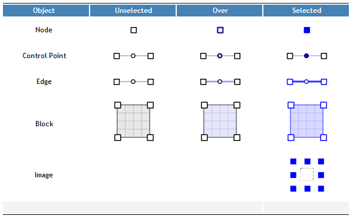

对象选择
选择工具（）用于选择和操作对象。选中某个对象后，可以用鼠标拖动它重新定位，并可编辑其属性。
在构造视图中，可被选择的对象包括：点（也称节点）、边、控制点、块体、图像和背景几何数据。
外观
对象的外观会因其选择状态而异。除背景图像和几何外，未选中的对象在鼠标靠近到可单击时即显示高亮。单击该对象后，它将以蓝色绘制，表示已被选中。
对于背景图像和几何，可以双击该对象将其选中，或右键单击它以显示包含选择该对象命令的上下文菜单。有关处理这些对象的更多信息，见 背景图像 / 几何数据（Background Images / Geometric Data）。
下表列出了各类对象的状态。


多重选择与种子对象
进行多重选择时，只有同类型的对象才能一起被选中。因此可以选中点，也可以选中边，但不能同时选中点和边。这就引入了种子选择的概念。种子对象是多重选择中第一个被选中的对象，它指明可加入该选择的对象的类型。
- 实现多重选择有几种方法：
- 在已选中一个对象的情况下，单击时按住 Control 键可将更多同类型对象加入选择。Ctrl + 单击也可从选择中移除单个对象。
- 围绕要选择的对象拖动选择矩形（也称为框选）。与种子类型相符的对象将被选中。如果选中了错误类型的对象，只需单击一个正确类型的对象，然后重新绘制选择矩形。
- 使用 命令可选择种子类型的所有对象。
多个控制点只能在同一条边上被选中。一旦选中一个控制点，就只能将同一条边上的其他控制点加入选择。
当选中多个对象时，可拖动其中任意一个选中对象来移动整组对象。
合并点
可以通过将一个点拖到另一个点之上，将两个点合并在一起。
上下文菜单
在选择模式下，根据您在构造视图中单击的位置以及是否选中了对象，上下文菜单中可能显示不同的命令。
| 添加点 | 该命令将显示坐标编辑器，您可在其中输入新点的坐标。 |
| 重置视图 | 设置视图放大倍数以显示整个模型范围。 |
| 缩放至选择集 | 设置视图放大倍数使其等于当前选择集的范围。 |
| 挤出选项 | 打开“选项”对话框并定位到挤出部分。 |
| 编辑点属性 | 在右键单击选中的点时出现。显示该点的坐标编辑器。 |
| 编辑边属性 | 在右键单击选中的边时出现。显示所有选中边的属性编辑器。 |
| 编辑控制点坐标 | 在右键单击选中的控制点时出现。显示所有选中控制点的坐标编辑器。 |
| 编辑块体属性 | 在右键单击选中的块体时出现。显示所有选中块体的属性编辑器。 |
| 选择背景图像 | 仅在已导入图像时出现。用于选择该图像。 |
| 选择几何数据集 | 仅在已导入几何数据集时出现。用于选择该数据集。 |
| 下一模式 | 在选中背景图像或数据集的情况下，使该对象进入下一模式（旋转模式）。 |
| 退出模式 | 在选中背景图像或数据集的情况下，取消选择该对象并使其退出调整大小或旋转模式。 |
| 设置固定销 | 在选中背景图像的情况下，使鼠标进入可使用固定销在调整大小时固定图像某一点的模式。 |
| 释放固定销 | 从背景图像中移除固定销。 |
其他鼠标模式下的鼠标右键
当选择工具处于活动状态时，上述所有选择和移动操作均在鼠标左键上执行。当选择其他交互式工具之一时（即点-边工具（ ）、控制点工具（
）、控制点工具（ ）、块体划分工具（
）、块体划分工具（ ）），此处所述的所有选择/移动操作均可在鼠标右键上使用。这样您就可以在使用交互式工具时，不必为进行位置或属性调整而在活动工具与选择工具之间反复切换。
）），此处所述的所有选择/移动操作均可在鼠标右键上使用。这样您就可以在使用交互式工具时，不必为进行位置或属性调整而在活动工具与选择工具之间反复切换。
| 这些内容对您有帮助吗？… 版权与免责声明 |
FLAC3D © 2019, Itasca | 原文更新于 2020 年 10 月 8 日 |